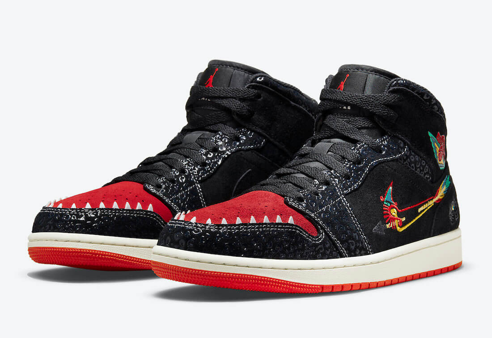
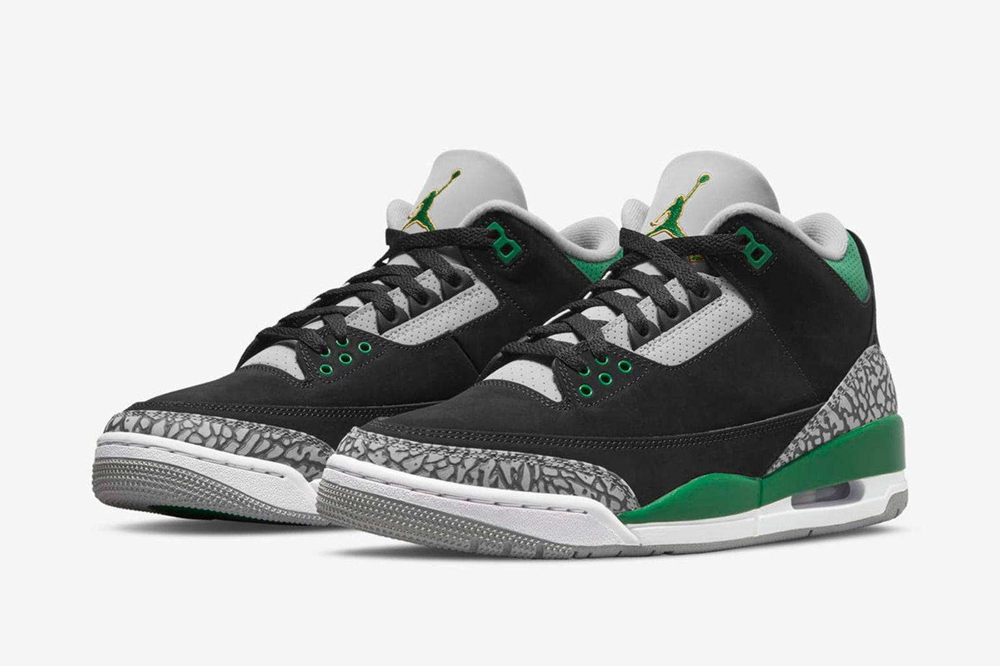
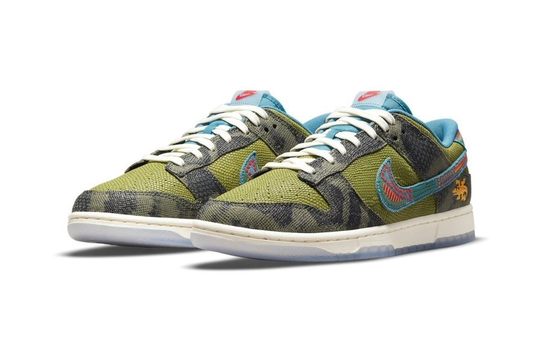
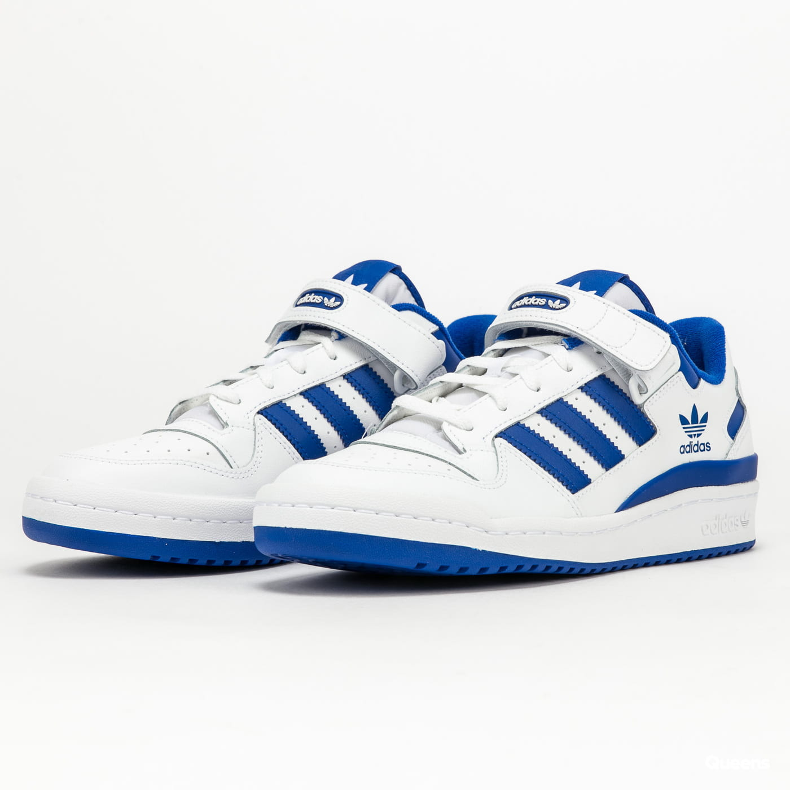
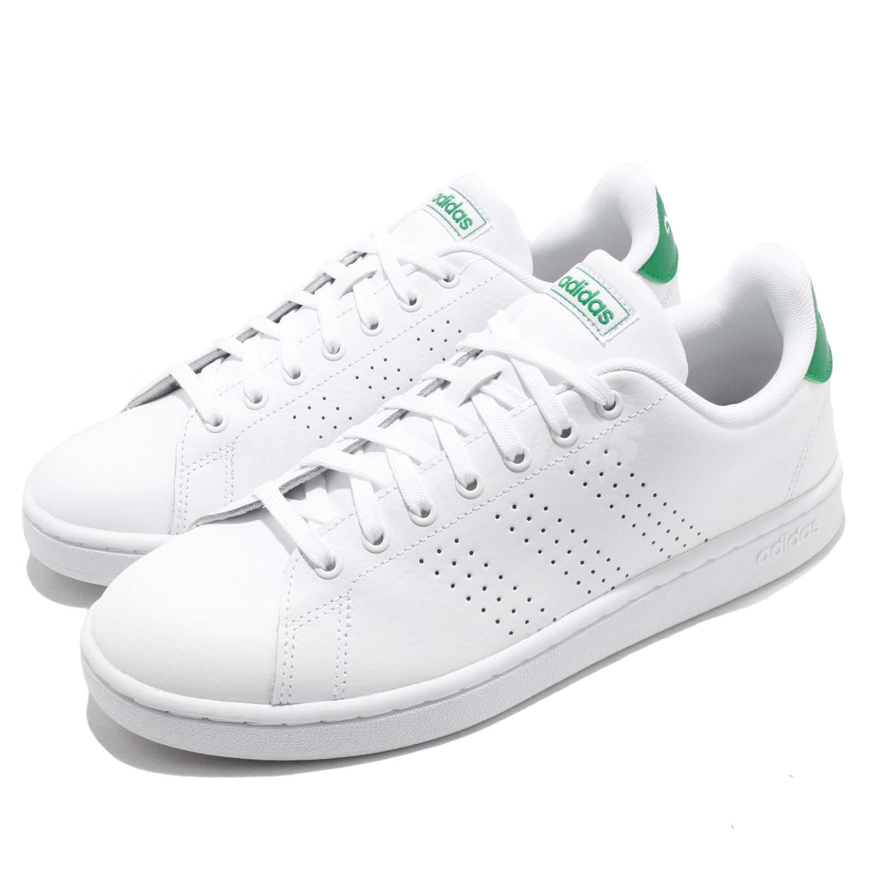
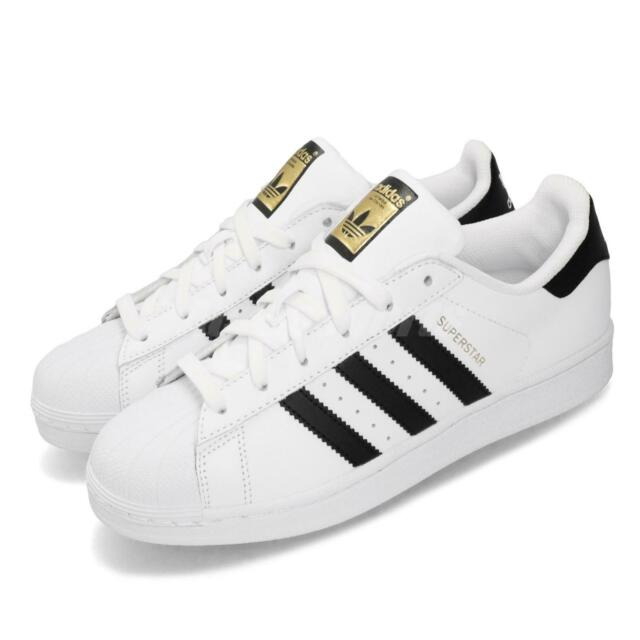

Jordan
|  |
La colección de Día de Muertos, Siempre Familia, honra la conexión infinita con la familia a través de esta autentica tradición mexicana. Para el día de muertos colaboramos con nuestra familia, una comunidad mexicana de artistas y voces auténticas, con el fin de crear una historia única inspirada en el Mictlán, dedicada para la familia. La única constante que tenemos en la vida. |
Precio: Q1,300.00 |

|
El resultado es uno de los modelos más limpios y bonitos del año, pero también uno de los que cargan con más historia. La silueta que vemos hoy juega, como es a veces el caso en las Air Jordan 4, con una base blanca y color en los apliques, pero los fans de la marca reconocerán más de un toque familiar. | Precio: Q2,100.00 |
|  | Nacidas en el 88, las Jordan 3 fueron el primer modelo de la marca en tener el emblemático logo "Jumpman", una ilustración de la silueta del jugador. También corresponde a la primera Jordan creada por Tinker Hatfield, impulsor importante de la firma. | Precio: Q2,000.00 |
Nike

|
La intervención del icónico Air Force 1 está inspirada en la calavera, utilizada como parte de la decoración de las ofrendas y los altares. La parte superior de la silueta presenta áreas reflectantes que resaltan los gráficos de esta figura. Para el modelo Nike Air Max 95, Nike se inspiró en la catrina.. |
Precio: Q1,000.00 |

|
Hay una primera vez para todo. En el caso del Swoosh, se usó por primera vez para representar a Nike el 18 de junio de 1971, una fecha grabada en el historial del calzado deportivo y que también se encuentra justo debajo del Swoosh de este Dunk High de edición especial. No es cualquier Swoosh el que se luce en la parte superior exterior de este Dunk High "First Use" | Precio: Q1,500.00 |
|  | A finales del 2005, Christian Salinas «Nahual» artista mexicano, colaboro con Nike Sb para crear este limitado e icónico par dentro de la cultura de los sneakers. Sin mencionar, una aportación de nuestra cultura y tradiciones lanzado hacia el mundo. | Precio: Q1,600.00 |
Adidas
|  |
Originalmente lanzada en 1984 como una zapatilla para jugar basketball, la adidas Forum se convirtió pronto en un ícono de la cultura. Siendo usada no solo por atletas, sino por skaters, músicos, artistas y bailarines, esta silueta hizo su transición de las canchas a las calles hasta transformarse en un clásico. |
Precio: Q1,200.00 |
|  | En 1963, Adidas inventó sus primeras zapatillas para tenis: unas deportivas de cuero que se convirtieron en un éxito entre los jugadores del deporte blanco | Precio: Q1,000.00 |
|  | Adidas Superstar nacieron con el objetivo de reinar en las canchas de baloncesto, pero terminaron haciéndolo en las calles. Durante 3 décadas se han mantenido como unas zapatillas básicas y atractivas. | Precio: Q800.00 |